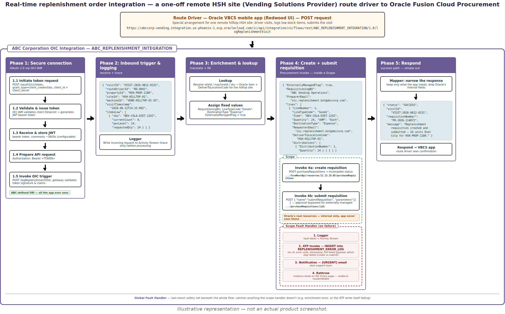
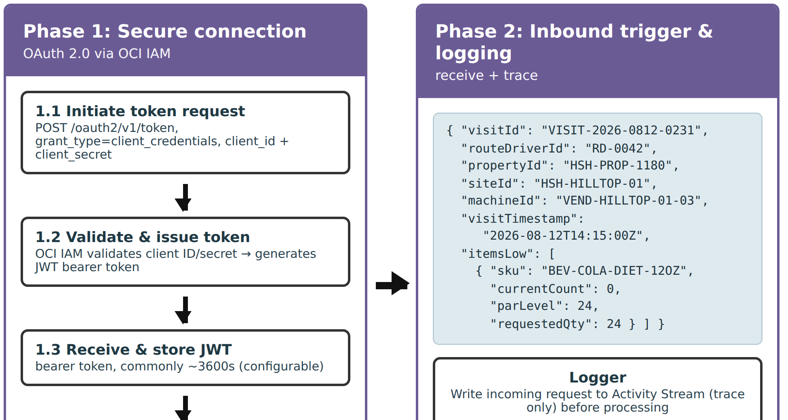
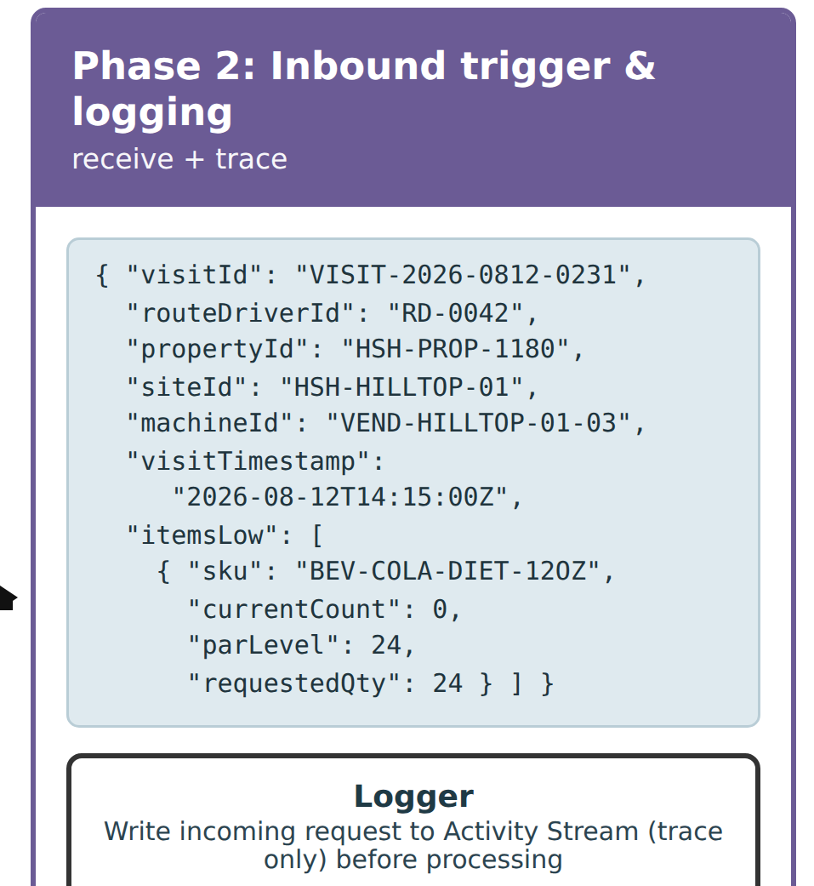
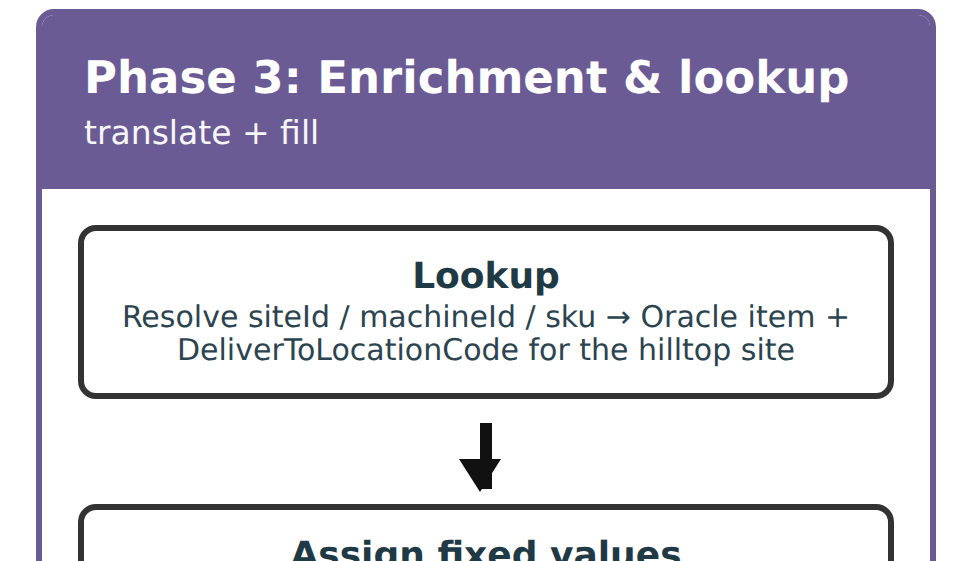
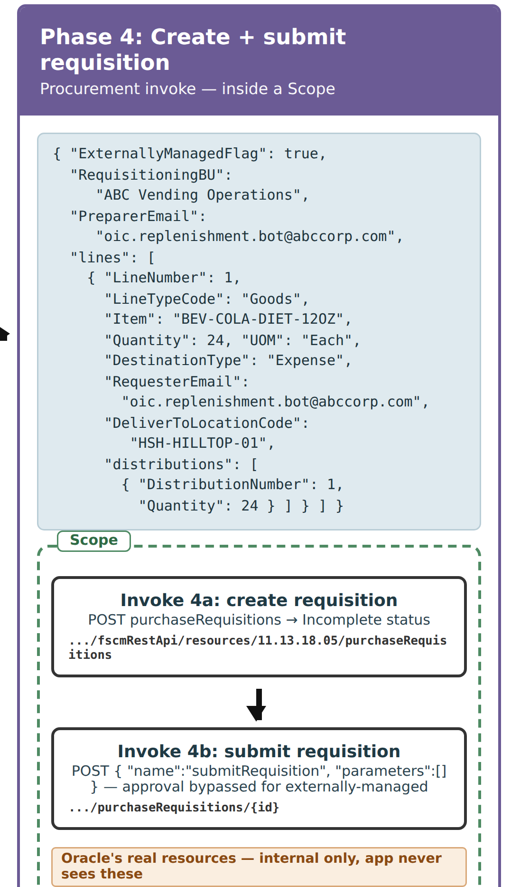
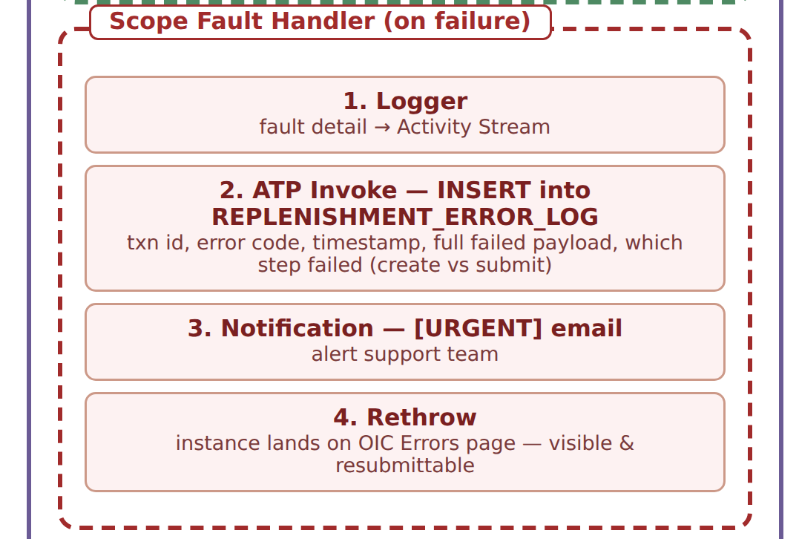
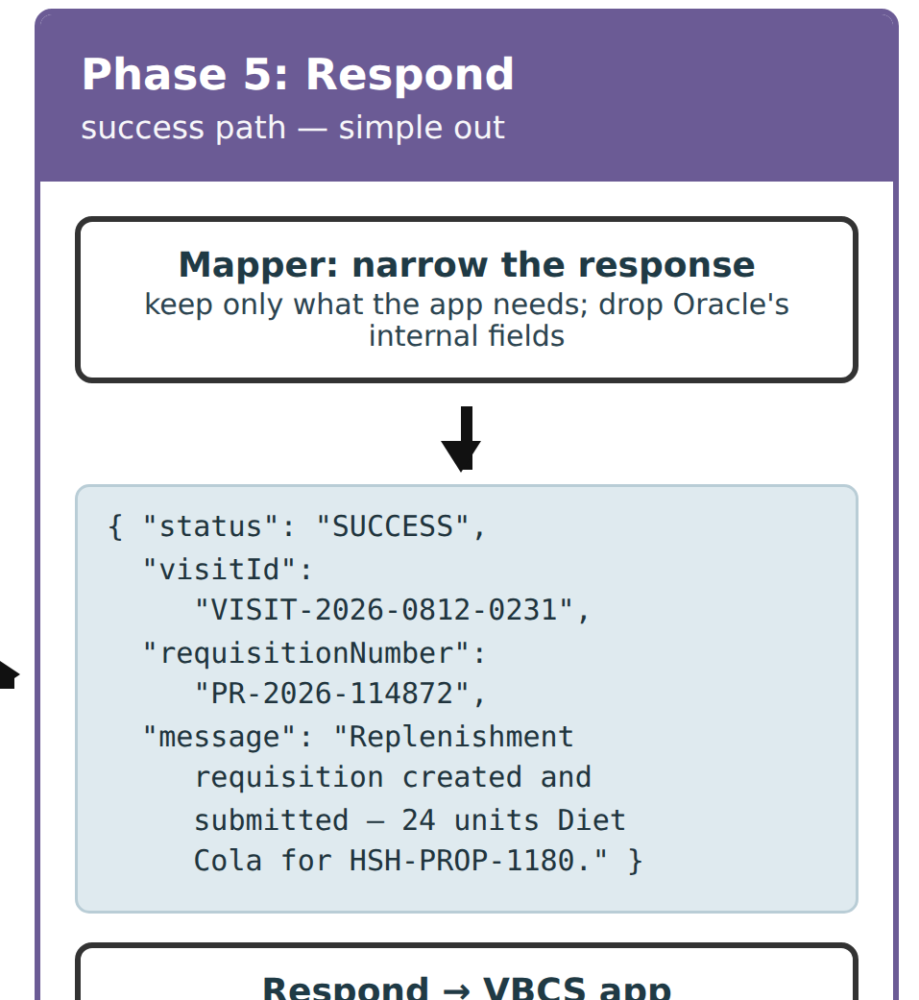

The One-Off — An OIC Replenishment Integration for a Single Hilltop Site
A follow-up in the OIC series. Earlier chapters covered a real-time sales order integration from a non-Oracle customer into ABC's Order Management. This one tackles a different shape of problem — a genuine one-off. A single remote hilltop office site of Home, Sweet Home needs its restock route driver to place replenishment orders, from a non-Oracle mobile app, into ABC Corporation's Oracle Fusion Cloud Procurement. Rather than reconfigure the core system for one edge case, Harrison builds a targeted OIC integration around Oracle's own externally-managed-requisition pattern — narrated phase by phase, with the real Procurement field names and a full fault-handling path.
ExternallyManagedFlag, PreparerEmail,
RequesterEmail, LineTypeCode: "Goods",
DestinationType: "Expense", UOM: "Each", the
distributions child array, purchaseRequisitions,
and the submitRequisition action) are checked against
Oracle's current documentation for Oracle Fusion Cloud Procurement,
including Oracle's own worked example for creating externally-managed
requisitions. The integration user requires the Procurement REST Service
Duty role (ORA_PO_PROCUREMENT_REST_SERVICE_DUTY). The
diagrams are illustrative reconstructions built to be technically
accurate, not actual product screenshots — Oracle's UI and API details
can change across releases.
The Storyboard
📱 On mobile? Pinch to zoom on each screen to read the payloads and field names clearly.
1The Ask
2The Situation
3Harrison Takes It On
4The Overview

5Phase 1 — Secure OAuth 2.0 Connection

grant_type=client_credentials), OCI IAM validating the client and issuing a JWT bearer token (commonly ~3600s), then presenting Authorization: Bearer <TOKEN> on the call to ABC's own endpoint. The app only ever knows ABC's URI, never Oracle Procurement.6Phase 2 — Inbound Trigger & Logging

/logReplenishmentVisit, and a Logger records it to the Activity Stream immediately, before any processing.7Phase 3 — Enrichment (Lookup + Assign)

siteId, machineId, and sku into Oracle's item and the hilltop site's DeliverToLocationCode. An Assign sets the fixed values the app never sends — RequisitioningBU, LineTypeCode: "Goods", DestinationType: "Expense", and ExternallyManagedFlag: true.8Phase 4a — The Happy Path (Create + Submit)

purchaseRequisitions resource creates the requisition in Incomplete status; then a second call submits it via the submitRequisition action — and because it's externally managed, Oracle bypasses the approval workflow. Note the two-call reality: "created" and "submitted" are distinct steps, and the gap between them is a real failure surface.9Phase 4b — When It Fails (The Fault Handler)

INSERTs the failure (transaction ID, error code, timestamp, full failed payload, and which step failed) into a REPLENISHMENT_ERROR_LOG table, an [URGENT] email alerts ABC's Procurement contact, and a Rethrow pushes the failure onto OIC's Errors page so it stays visible and resubmittable. A Global Fault Handler sits beneath as the last-resort net.10Phase 5 — Simplified Response

11The Whole Flow, and Why a One-Off Deserves OIC
Why This Chapter Matters
Concepts Covered
| Concept | What it means | Step |
|---|---|---|
| Application-driven integration | An App Driven Orchestration triggered by an inbound REST call — the route driver's app submitting a visit — rather than by a schedule. Built as an ordered set of actions that process and respond within the same call. | 4–11 |
| REST Adapter (trigger) | The inbound connection exposing ABC's own endpoint, /logReplenishmentVisit — an ABC-chosen, stable URI that has nothing to do with Oracle's own naming. | 5, 6 |
| Logger | Writes the incoming request to OIC's Activity Stream for traceability — Activity Stream only. (Persisting a durable record to a database is a separate action; see ATP insert below.) | 6 |
| Lookup | Resolves the driver's siteId, machineId, and sku into Oracle's item and the hilltop site's DeliverToLocationCode. | 7 |
| Assign | Sets the fixed values the app never sends — RequisitioningBU, LineTypeCode, DestinationType, and ExternallyManagedFlag: true. | 7 |
| Mapper | Builds the enriched Oracle payload before the invoke, and later narrows Oracle's response down to what the app needs. | 8, 10 |
| REST Adapter (invoke) — Procurement | POSTs to Oracle's real purchaseRequisitions resource, then calls the submitRequisition action — two distinct calls, JSON end to end. | 8 |
| Externally-managed requisition | Oracle's built-in pattern for requisitions created by an outside system. Set with ExternallyManagedFlag: true; the requisition is created in Incomplete status, then submitted, and the approval workflow is bypassed. | 7, 8 |
| Scope fault handler | Catches a failure around the specific Procurement invoke — not the whole flow — so the error message can name exactly what failed, including the "created but not submitted" gap. | 9 |
| ATP database insert | A separate ATP Adapter Invoke, inside the fault handler, that INSERTs the failure (error code, timestamp, full failed payload, and which step failed) into a REPLENISHMENT_ERROR_LOG table for support to query and reprocess. | 9 |
| Email notification | Sends the [URGENT] alert to ABC's Procurement contact from within the fault handler. (OIC's Notification action conveys urgency through subject and content, not a literal priority flag.) | 9 |
| Rethrow | Pushes the caught fault back up after logging and alerting, so the instance lands on OIC's Errors page — visible and resubmittable — rather than being silently swallowed. Rethrow re-surfaces the failure; it does not re-attempt the call. | 9 |
| Global fault handler | The last-resort safety net beneath the whole flow, catching anything the scope handler doesn't — for example an enrichment error, or the ATP write itself failing. | 9 |